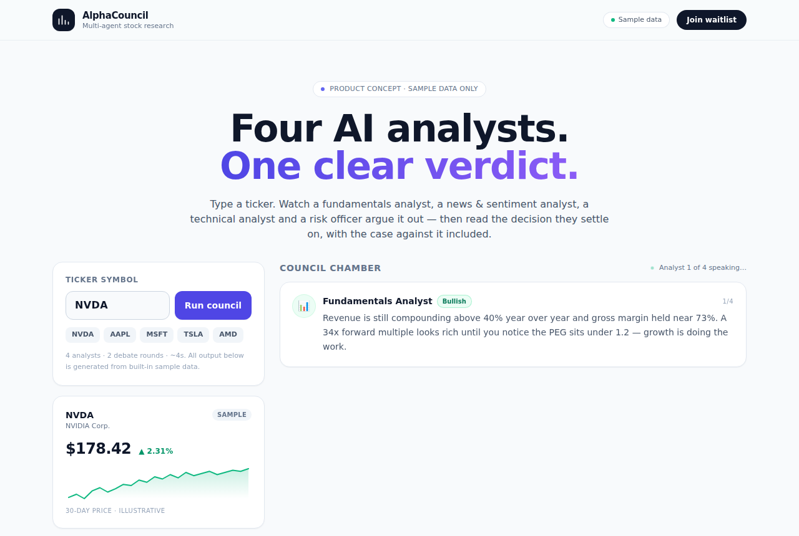

TradingAgents: Multi-Agent LLM Stock Research Framework
TauricResearch/TradingAgents · AI appsApache-2.0⭐ 120,248

What it is TradingAgents is an open-source research framework from TauricResearch that wires several LLM agents into a simulated trading desk. Analysts pull fundamentals, news, macro data and social sentiment; researchers argue bull and bear cases; a trader and a portfolio manager turn that debate into a decision. You run it locally with your own LLM API keys.
Why it's taking off The repo is trending hard because it turns a vague idea ("AI stock picking") into something you can actually inspect. The changelog shows a steady push on the parts that matter for credibility: point-in-time data handling, look-ahead fixes in FRED and social feeds, settled backtests across long holidays, and an HTML report per run. That engineering discipline is rare in this category and is likely why developers keep starring it.
Where the product opportunity is Most retail investors will not clone a Python repo and manage provider keys. A thin web layer — enter a ticker, get the debate transcript, a one-page research memo, and a timestamped backtest — is the obvious product. The pitch is not "AI tells you what to buy"; it is "AI writes the research note you would have spent an afternoon writing." Charge for report generation, saved run history, and portfolio-level summaries.
Be careful: anything that looks like personalized investment advice gets close to SEC investment-adviser territory in the US, and backtest claims invite overfitting criticism. Position it as research tooling with explicit disclaimers, not recommendations.
Today's top 5
| # | Repo | Buzz | Startup | Overall |
|---|---|---|---|---|
| 1 | TauricResearch/TradingAgents | 8.33 | 6.65 | 7.57 |
| 2 | Donchitos/Claude-Code-Game-Studios | 7.67 | 7.15 | 7.53 |
| 3 | designfuchen/word-atlas | 7.67 | 6.7 | 7.32 |
| 4 | JustVugg/colibri | 8.33 | 6.95 | 7.28 |
| 5 | simbasjungles/free-my-tv | 7.67 | 7.35 | 7.11 |